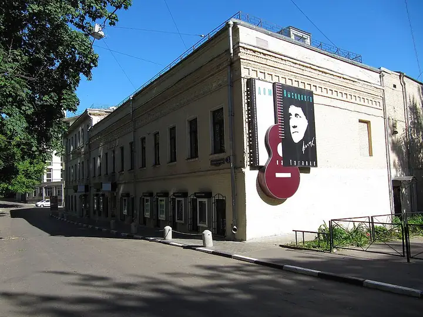

Фото: Vladimir OKC, CC BY-SA 3.0 · Wikimedia Commons
Музей · ЦАО
Музей Высоцкого
Музей Владимира Высоцкого на Таганке, рядом с его театром.
- ₽ · до 1 500 ₽ на человека
- в 1 плане
Позвать сюда: Музей ВысоцкогоОткрыть в каталоге: Музей ВысоцкогоМаршрут до места: Музей Высоцкого
Адрес и детали
- Адрес
- Нижний Таганский туп., 3
Открыть на Яндекс Картах (в новой вкладке) - Метро
- м. Таганская
- Округ
- Центр (ЦАО)
- Цена
- до 1 500 ₽ на человека
- Часы работы
- вт, ср 11:00–17:30; чт 13:00–20:30; пт–вс 11:00–17:30 · проверили в октябре 2026
- Телефон
- +7 (495) 915-75-78
- Проверено
- работает — проверили в октябре 2026
Планы с этим местом 1
- Музей Высоцкого · Музей · м. Таганская
- 4 минуты пешкомТеатр на Таганке · Театр
Сначала музей Высоцкого, пока он открыт, а вечером спектакль в легендарном театре Любимова и Высоцкого в четырёх минутах пешком.
Открыть план: Таганка и ВысоцкийПозвать сюда: Таганка и Высоцкий
Фото: Vladimir OKC, CC BY-SA 3.0 · Wikimedia Commons

Похожие рядом

Что ещё рядом

Как позвать
- Выбери план, место или событие — в карточке адрес, цены и маршрут в Яндекс Картах.
- Нажми «Позвать сюда» — соберётся приглашение-игра для свидания или голосование для компании.
- Отправь ссылку в любой мессенджер: тебе ответят, а компания отметит, куда и когда может. Бесплатно и без регистрации.